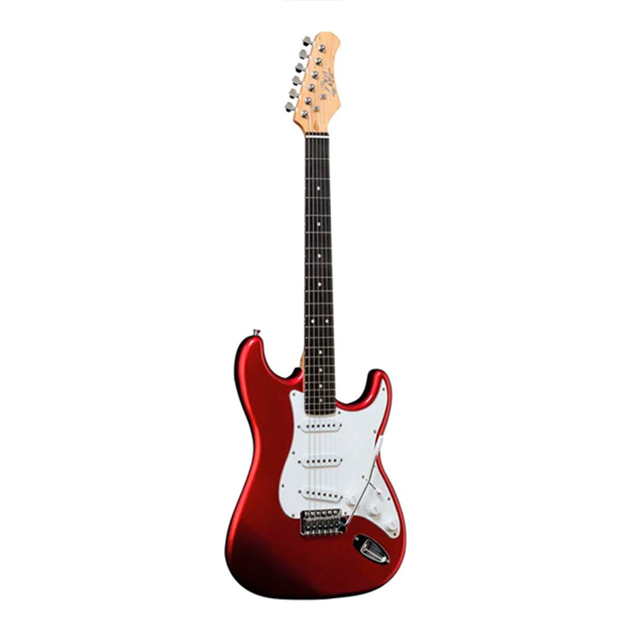

Instrumentos Musicales

Guitarra
Instrumento de cuerdas con un sonido versátil y armónico, utilizado en múltiples géneros musicales.

Piano
Un clásico en la música, conocido por su amplia gama tonal y su uso en la composición y ejecución.